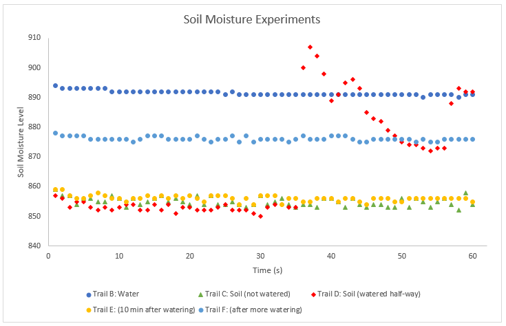
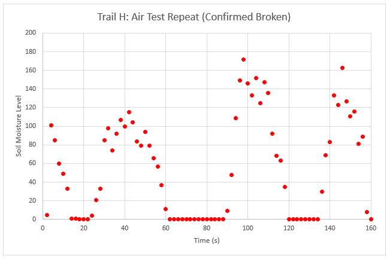
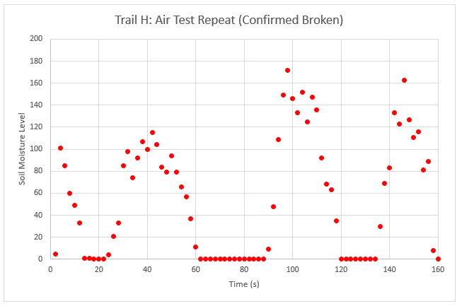

Soil Moisture Data Collection
03.05.2017I had this soil moisture sensor lying around so I decided to test it out. I just hooked it up to an Arduino and collected data form the serial monitor. Graphing the data in Excel and trying to make it look neat was probably the most useful experience I got out of this.
The "soil moiosture level" is just the 0-1023 value given by Arduino's analogRead function. The first trails A and B are controls using air and water. Air was just a 0 reading and water was about 895, around what seems to be a maximum for the sensor. Trail C was soil that hadn't been watered, which was a value around 850. Trail D was the same soil but I watered it half way through data collection. Trail E was ten minutes after that watering and Trail F was later still, after more watering. Then I started getting data indicating that my sensor was broken.

 
